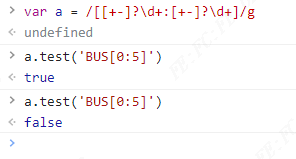
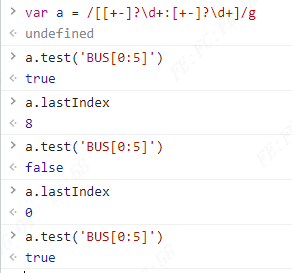
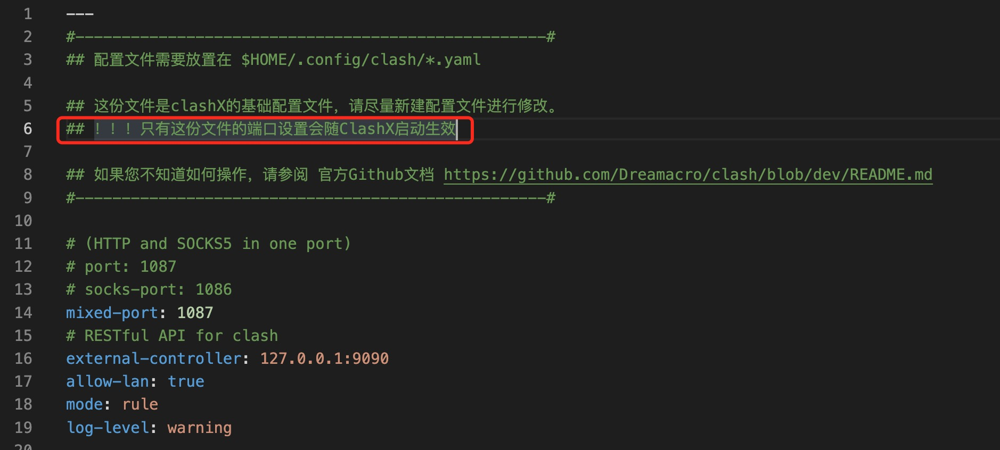

这里主要用来记录我生活中的所思所想，当然大部分可能是跟计算机、编程有关的。这些想法或者摘抄比较短小，不足以形成一篇文章，但仍然值得记录下来反复品味，回顾。它们的编排方式是按日期倒序来的。
2023-11-14
今日需求
- 山城导航
在重庆的时候，发现地图导航完全是错的，不管是步行导航，还是驾驶导航。然后司机说要用本地的离线地图包，我当时在想离线地图包还有此等神奇的作用吗？像重庆这种山城，高度定位似乎很不准，在不同的海拔高度，路线根本不一样。要怎么解决这种问题呢
I had a dream that I speak English in any situation all the night.
我昨晚梦到自己在梦里一直讲英语，就是任何场景下都在用英语输出。真是个怪现象
但确实可以做到其实，现在有了 chatgpt 就相当于有了一个随身的英语老师，它甚至可以帮我零成本的同声传译。
2023-11-13
今日发现的 bug：
- 在用 label for 的时候发现 id 重复，导致无法点击触发 checkbox 勾选
- http post 参数传错导致 404
朋友提出，可以用useId来避免 id 重复
今日发现的需求：
- 二维表格：画一个笛卡尔积（二位表格）的时候发现，二维表格用 markdown 很不好画，想要在一个单元格里面画一根斜线更是难（画斜线其实可以直接敲个字符
\，毕竟是给人看的，人能懂就行）。于是我用 eda 画了一个二位表格 - 查找项目中的一个文件的某个函数中的历史代码（想看演变过程），发现没有很好的工具，只能看到文件的提交历史。能否自己做一个出来
window location href 和 hash（#）
- 修改了 hash 不会刷新，修改了非 hash 会刷新
- 有
#的情况下，自己等于自己不会刷新，没带#的情况下，自己等于自己会刷新 - 去掉
#会刷新 - 加上
#不会刷新
2023-10-23
ts 项目使用 js 包
ts 项目引入 js 包会报错，我们只需要在项目的任意位置新建一个xxx.d.ts文件，内容填入：
1 | declare module '【import 的第三方库名】'; |
即可解决报错
TODO: 发布一个 typescript 的 npm 包
nginx 同一端口不同路径映射到不同项目
1 | location /project1 { |
2023-10-20
发现一个问题 Object.defineProperty 一旦设置了 set 方法，就没办法设置值到该属性上了，只能通过 get 的时候返回对应值来达到不影响原来代码的目的。比如：
1 | var a = { a: 1 }; |
尝试在 set 里面写this.a = x;会导致死循环，而写return x;则依旧没有设置上 a.a
2023-10-18
如何发布自己的 npm 包？
- 到
https://www.npmjs.com/注册账号 npm init -y新建一个项目- 在控制台
npm login登录自己账号 - 到项目目录下
npm publish --access public，发布公开包（私有包要收费）
注意事项，新建项目的目录不能是中文会报错，如果没充钱
--access public是必须的，包名可能会跟已有的包名冲突，可以通过npm search xxx查询
npm 依赖包版本号
npm 语义版本(npm 依赖包版本的~、>、^符号各代表什么？)
2023-10-17
SVG 默认开了抗锯齿，会把 1 像素的线条用 2 像素显示
SVG 如果想展示真实的像素（关闭抗锯齿），可以设置 css：shape-rendering: crispEdges
但 HTML5 canvas 不能这样达到目的
graphics - SVG / Canvas :: shape-rendering="crispEdges" via JavaScript? - Stack Overflow
canvas 可以通过以下方法来达到目的：
1 | 当线宽为偶数时，坐标应指定为整数。否则坐标应指定为整数+0.5px。 |
2023-10-16
在 disabled 的 input 上面，右键，父级 div 的 onMouseDown 进不了，要怎么办？可以在事件的捕获阶段监听：
1 | elem.addEventListener(..., {capture: true}) |
DOM 事件标准描述了事件传播的 3 个阶段：
捕获阶段（Capturing phase）—— 事件（从 Window）向下走近元素。
目标阶段（Target phase）—— 事件到达目标元素。
冒泡阶段（Bubbling phase）—— 事件从元素上开始冒泡。
如果是 react 的话，就用 onMouseDownCapture。
不过最后发现依然不行，要用 onPointerDownCapture 才可以。
2023-08-11
Systems, math and explosions (in no particular order)
这篇文章讲系统是怎么变复杂的（因连接而复杂），以及怎么消除复杂和混乱（减少节点）。
2023-08-10
2023-08-07
html 空格自动合并的问题
HTML 提供了 5 种空格实体（space entity），它们拥有不同的宽度，非断行空格( )是常规空格的宽度，可运行于所有主流浏览器。其他几种空格(    ‌‍）在不同浏览器中宽度各异。
它叫不换行空格，全称 No-Break Space，它是最常见和我们使用最多的空格，按下 space 键产生的空格。在 HTML 中，如果你用空格键产生此空格，空格是不会累加的（只算 1 个）。要使用 html 实体表示才可累加，该空格占据宽度受字体影响明显而强烈。
 它叫"半角空格"，全称是 En Space，en 是字体排印学的计量单位，为 em 宽度的一半。根据定义，它等同于字体度的一半（如 16px 字体中就是 8px）。名义上是小写字母 n 的宽度。此空格传承空格家族一贯的特性：透明的，其占据的宽度正好是 1/2 个中文宽度，而且基本上不受字体影响。
 它叫“全角空格”，全称是 Em Space，em 是字体排印学的计量单位，相当于当前指定的点数。例如，1 em 在 16px 的字体中就是 16px。此空格也传承空格家族一贯的特性：透明的，其占据的宽度正好是 1 个中文宽度，而且基本上不受字体影响。
 它叫窄空格，全称是 Thin Space。我们不妨称之为"瘦弱空格";，就是该空格占据的宽度比较小。它是 em 之六分之一宽。
‌它叫零宽不连字，全称是 Zero Width Non Joiner，简称"ZWNJ"，是一个不打印字符，放在电子文本的两个字符之间，抑制本来会发生的连字，改为以这两个字符原本的字形来绘制。Unicode 中的零宽不连字字符映射为“”（zero width non-joiner，U+200C），HTML 字符值引用为:‌
‍它叫零宽连字，全称是 Zero Width Joiner，简称“ZWJ”，是一个不打印字符，放在某些需要复杂排版语言（如阿拉伯语、印地语）的两个字符之间，使得这两个本不会发生连字的字符产生了连字效果。零宽连字符的 Unicode 码位是 U+200D(HTML: ‍）。
此外，浏览器还会把以下字符当作空白进行解析：空格（ ）、制表位（	）、换行（
）和回车（ 
）还有中文全角空格（　）等等。
用
tspan标签和xml:space="preserve"也可以解决
2023-08-02
最近想把某个消息放在组件文件中进行监听，但发现消息总线可能还没注册好，这个时候可以用DOMContentLoaded这个事件。
官方文档：Window: DOMContentLoaded event
- 默认情况下，脚本只阻塞其后的 dom 元素解析
- defer 告诉浏览器，脚本需要等 HTML 解析完后执行（多个 defer 脚本按出现顺序执行）
- async 告诉浏览器，脚本异步下载（与 HTML 解析一起进行），下载完后会立即执行（不会等 HTML 解析完）
所以一般来说，如果脚本与 HTML 有关，就用 defer，无关就用 async
2023-07-26
localeCompare
js 自然排序：localeCompare
1 | arr.sort((a, b) => b.localeCompare(a)); |
对象遍历的速度比较
Object.keys()，Object.values()，Object.entries()的性能差异如何呢？
1 | let res = {}; |
测试结果是 values()速度最快，values()速度>keys()速度>entries()速度
values()大概只有 keys()执行时间的十分之一，而 keys 执行时间大概是 entries 的一半
而写法上把Object.keys写在 for 里面和 for 外面其实是一样的速度：
1 | for(let v of Object.keys(res||{})) |
for 循环只会在初始化的时候计算一次Object.keys，以下代码可以验证：
1 | const a = {}; |
1只会打印 10 次
以下写法类似：
1 | const a = {}; |
for of 和 for in
for of用于遍历可迭代对象（数组之类的），for in用于遍历对象
for in速度跟for of+Object.keys()差不多，区别是 in 会遍历到 prototype 上的属性，而后者则不会。所以如果不想遍历到原型上的属性，要么别用for in，要么要多写一个 obj.hasOwnProperty 的判断
1 | class A { |
官方文档：
for of和 C 语言语法的遍历速度比较
1 | let res = new Array(100_0000); |
大概有 6 倍的差距
2023-07-19
消息总线和函数调用的区别：消息总线用了一个集合来收集事件回调函数，导致了消息总线可以在外部零散的注册回调，而函数调用则相当于是在消息发出的地方集中注册消息监听。所以消息总线很好的对依赖进行了倒置，因为，是事件回调函数依赖了事件，而不是事件依赖了事件的响应函数。
所以从本质上来说，就是 A 依赖 B，还是 B 依赖 A 的问题。你有一段逻辑 A 和一段逻辑 B，其中 B 要在 A 之后执行，如果你认为应该是 A 依赖了 B，那么直接调用即可，如果你认为是 B 依赖了 A，那么就用消息总线。
用浏览器的 window.postMessage 或者 worker.postMessage，可以把消息发到其他的 window 或者 worker 来执行事件回调函数。但这样的话就是异步执行了。
1 | window1.postMessage("hello", "*"); |
异步的不是消息总线，而是 postMessage。
2023-07-17
移动 iframe 元素会造成 iframe 重新加载 src，所以如果想移动 iframe 而不引起刷新就只能用 css。
如何在不丢失状态的情况下在 DOM 中移动 iFrame？
无论何时附加 iframe 并应用了 src 属性，它都会触发一个加载操作，这与通过 JS 创建 Image 标记时类似。因此，当您删除并附加它们时，它们是全新的实体，它们会刷新。这就是 window.location = window.location 重新加载页面的方式。
我所知道的重新定位 iframes 的唯一方法是通过 CSS。
所以最好的方法实际上是弃用 iframe，改用 div 或者 canvas。
另外就是我发现移动 dom 元素只需要 appendChild 到新的位置即可，并不需要删除原 dom。
importmap
javascript 现在支持跨脚本 import 了：JavaScript import maps are now supported cross-browser
1 | <script type="importmap"> |
2023-07-08
关于 iframe 的基本知识：
- 获取外层 window：
window.parent - 获取顶层 window:
window.top - 获取当前文档所在的 iframe 元素:
window.frameElement - 获取当前文档内所有的 iframe:
window.frames，这是个可迭代对象，可以像数组一样使用
2023-07-07
在立创 EDA 的编程中经常遇到的问题：
- 公用混乱，代码腐烂（参数无约定，随意修改）
- 某些地方没有同步更新（比如修改名称，需要同步更新属性面板，底部库，tab 页，画布等等诸多地方）
2023-07-06
最近同事遇到一个 react 的坑，他把 root 缓存了起来，然后发现整个组件不更新：
1 | root = root || ReactDOMClient.createRoot(dom); |
不缓存就可以更新了。
实际上 react 的 useState 是只在初始化的时候用参数的值的，而想要让组件重新初始化，可以加 key，key 改变，就会重新初始化。
父组件 render，子组件也会 render，但不一定会用 useState 里面的值（除非子组件重新初始化）
父组件重新初始化，子组件也会重新初始化，且一定会用 useState 里面的值
2023-06-15
简而言之就是去 github 上下载 1.1.x 的老版本的 obsidian，我下载的是 1.1.16
2023-06-13
搞定了 obsidian 多端同步，通过 git 插件自动和远端 github 同步。可以愉快的在手机上码博客了。而且据说 obsidian 挺好用的，应该比 vscode 写博客强吧。
添加了 google analytics，GA4。在主题里面找到google-analytics.swig，代码如下：
1 | {% if theme.google_analytics %} |
主题配置文件_config.yml中添加变量：google_analytics: G-xxx
2023-06-10
搞了两天 kcptun，最后发现居然更新一下版本就解决了问题
问题描述：
手机上用 kcptun 有问题（纯 shadowsocks 无问题），但电脑上没问题。
我解决问题是主线是把报错信息放到谷歌上面搜，这已经是我惯用的手段了，搜了一大波，把可能的方法都试了一遍，正当我快要放弃的时候，我还是搜到了一个答案：Upgrading to latest kcptun solve this problem，但是用其他的报错信息搜到的，一共有两个报错信息，在安卓版 shadowsocks 5.3.3 上是：unable to resolve host "cp.cloudflare.com": no address associated with hostname，在安卓版 shadowsocks 4.8.7 上是：libsslocal exits too fast (exit code 70)
以下是我试过的办法：
- 把 shadowsocks 服务端换成 go，https://github.com/shadowsocks/go-shadowsocks2。Python版也试过，shadowsocks-libev也试过
- 换客户端版本，安卓版 shadowsocks 5.3.3，5.2.6，5.1.1，4.8.7
- 换 kcptun 的端口
- 在服务器开放 53 端口，安装 dns 服务
结论，以后出问题，第一解决方案应该是，确保所有软件版本都是最新的。
使用 VPS 挖矿挖点本回来
乌龟币迁移到了 FTM，而且感觉这个项目已经死亡了，服务器还是继续挖门罗币吧，说真的虚拟货币的生命力才是最重要的
如何避免 CPU 占满：https://www.azurew.com/life/%E6%8C%96%E7%9F%BF/7650.html，我采用的是加-t参数，限制线程数
下载 github release 文件
链接格式如下：
1 | wget --no-check-certificate --content-disposition https://github.com/xmrig/xmrig/releases/download/v6.19.3/xmrig-6.19.3-linux-x64.tar.gz |
2023-06-08
有这样一个 bug，在拖动一个三角图标（专门用于拖拽的组件）的时候，光标要显示col-resize：
1 | cursor: col-resize; |
项目中有两个其他的组件的表现都是符合要求的（拖动时候是col-resize），但我不清楚，原生的表现是什么，所以一直以为是我这边的代码有问题。
后来发现原来是那两个组件做了特殊处理，在 mousemove 的时候把这个 cursor 的样式加到了 body 上。
有的时候问题的关键在于你锁定的范围，假如一开始就先入为主找错了方向，那就根本不可能解决问题了。
想要弄清楚原生的表现，其实可以写个简单的例子，或者你的组件足够简单，你就可以自信的认为，问题不出在你这边，转而开始思考其他的可能性。
2023-06-07
vite 打包使用相对路径
坑爹的 vite 打包默认使用绝对路径，想要使用相对路径可以在配置中填：base: './'
ResizeObserver
监听 dom 的宽高变化：ResizeObserver
比如我做一个 scrollButton 组件（用来替代鼠标滚轮，实现点击触发 scroll），就要监听滚动对象父级的宽高变化来控制这个 scrollButton 组件的显示隐藏
nginx
nginx 的配置位置：/etc/nginx中，在该目录下，主要的配置文件是 nginx.conf
2023-06-06
买了国外的域名和服务器，这样就可以避免国内特别麻烦的备案了，话说国外的域名和服务器真是便宜啊：
- 服务器（VPS）：racknerd.com
- 域名：name.com
服务器购买参考了一篇文章：https://p3terx.com/archives/cheap-vps-racknerd.html，多亏这篇文章才买到了便宜的。
Windows 平台好用的远程 shell 工具：WindTerm
Mac OS 平台好用的远程 shell 工具：FinalShell
现在 Windows 平台也有 FinalShell 了，体验终于又统一起来了
以前搭 wordpress 博客的时候，被盗过两次，跟同事讨论了之后，发现可能是因为我使用了 root 账号远程登录，要论安全性的话，最好的方式是：
- 禁止 root 账号远程登录（那么别人想要登录，就只能猜你的账号名+密码，如果你开放了 root 登录，别人就只需要猜 root 密码）
- 把 ssh 端口改为非 22 端口，那黑客想要破解，就需要猜端口
- 普通账号不给 root 权限，这样即便普通账号被盗，情况也不算严重
- 设置一个强的 root 密码
这样一套组合拳打下来，黑客想要获取你服务器的最高权限，首先要知道你的 ssh 端口，然后要知道一对普通账号密码，最后要知道 root 的密码，才能最终获得最高权限。相比于只靠 root 密码的强度，安全了许多许多。
以下是需要用到的 linux 命令：
- 新建用户：
useradd <yourname> - 修改用户密码：
passwd <yourname> - 修改 ssh 端口号：编辑
/etc/ssh/sshd_config文件，修改#Port 22为：Port xxxx - 禁止 root 账号远程登录：编辑
/etc/ssh/sshd_config文件，修改#PermitRootLogin yes为：PermitRootLogin no
修改完/etc/ssh/sshd_config文件后，需要重启一下服务：
1 | setenforce 0 |
修改完端口，还要让防火墙放行此端口：
1 | // 放行指定端口 |
centos 安装 nginx
yum install 没有可用软件包 nginx。
1 |
|
原因是 nginx 位于第三方的 yum 源里面，而不在 centos 官方 yum 源里面
解决方法：
安装
1 | sudo yum install epel-release |
更新
1 | yum update |
重新试一下：
1 | yum install -y nginx |
显卡挖矿
币安现在也有矿池了：币安矿池
我用的显卡：NVIDIA GeForce RTX 4060 Laptop GPU 8GB，挖矿软件：GMiner，挖ETC
速度：31.10MH/s，效能：403.85KH/W
电费都收不回来
hexo 部署后，CNAME 会被自动删除，怎么办？
将需要上传至 github 的内容放在 source 文件夹，例如 CNAME、favicon.ico、images 等。
hexo 部署后，CNAME 会被自动删除，怎么办？ - 沉简的回答 - 知乎
拿图片生成 icon
2023-06-05
utterances
把博客的评论插件从来必力换成了 github issues，用的是 utterances 插件，主要参考了这篇文章：https://blog.lanweihong.com/posts/24011/，他的文章有一处错误导致我一开始没有成功：
1 | {% if theme.utterance and theme.utterance.enable %} |
将如上内容替换为：
1 | {% if theme.utterance and theme.utterance.enable %} |
就成功了
我的博客一直是零评论，而且浏览量也不高，这方面需要改善一下了，主要是 SEO 做的不好，还有就是平常也没有宣传过，再就是文章更新的比较少，虽然 notes 更新很频繁。
网格布局
最近搞 AwesomeWeb 项目，发现用 flex 布局没法满足这样一个需求：多行的情况下，既均匀，又从左开始，比如第一行四个元素，第二行三个元素。要实现这种布局就只能用 grid 布局了，flex 布局确实只适合一维的情况，但 grid 布局可以很自由的搞定二维布局。
2023-06-02
react router 用的比较少，参考以下几篇文章：
2023-06-01
正则表达式的坑

g的作用是全局搜索，不加g的话，匹配到第一个匹配项就停止了匹配，加了g就会匹配上所有匹配项。但我们在用 test 的时候，其实并不需要g，因为匹配到一个就是 true 了。但如果加了g的话，正则表达式对象的 lastindex 属性就会编程最后一个匹配项，那你继续再用这个正则表达式对象的话，就是从最后一个匹配项之后开始匹配了，就啥也找不到（啥也找不到之后，就会把 lastindex 又置为 0）

实际上我觉得 js 应该在使用 test 时，屏蔽掉g
UI 美学
我发现 UI 就是要匀称才好看，比如要均匀的平铺界面，留足缝隙（padding 和 margin），就是好看的关键要素，挤在一起就不好看了。人体也是如此，可以说匀称是个试金石。
雪碧图
根据雪碧图+background-position+固定的图片宽高，可以从雪碧图中抽取某个图片。
以下来自 chatgpt 的回答（输入：雪碧图）：
雪碧图（Sprite）是一种在网页设计和开发中常用的技术，用于将多个小图标、按钮或其他图像元素合并到一张大图中。这个大图被称为雪碧图或精灵图。使用雪碧图可以减少页面加载时间，因为只需要加载一张大图而不是多张小图。在页面上显示不同的图像元素时，可以通过 CSS 来控制显示的位置和尺寸，从而实现不同元素的显示。
创建雪碧图的一般步骤如下：
- 收集需要合并到雪碧图中的小图标或图像元素。
- 将这些小图标按照一定的规则排列在一张大图上，通常是水平或垂直排列。
- 使用图像编辑工具（如 Adobe Photoshop、GIMP 等）调整图像大小和位置，确保它们正确地对齐。
- 保存雪碧图为一张图像文件，通常是 PNG 格式。
- 在网页中使用 CSS 来引用雪碧图，并通过设置背景位置、尺寸等属性来控制显示不同的图像元素。
下面是一个示例 CSS 代码，展示如何使用雪碧图中的图像元素：
1 | Copy code .icon { |
在上述示例中，.icon类指定了使用雪碧图作为背景图像，并禁止重复背景图像。.icon-home和.icon-mail类分别表示了使用雪碧图中的 home 图标和 mail 图标。通过设置background-position属性，可以指定在雪碧图中的位置。同时，通过设置 width 和 height 属性，可以控制显示的尺寸。
使用雪碧图可以提高网页加载速度和性能，减少 HTTP 请求次数，并且对于移动设备和低带宽环境尤其有益。
2023-05-30
如何白嫖到免费的 office 官方软件：Word、Excel、Pointpot 最强免费安装教程！ | 零度解说
2023-05-29
电脑不够轻巧便携，手机的系统不够有生产力，对于编程开发来说甚至都没有 chrome 调试工具，当然手机屏幕太小也是个问题，但我还是搞了个 aidlux 来折腾一番。想要在 aidlux 里面用上电脑版的 chrome，就要通过 xfce4 来运行，一进去就让选是 wayland 还是 vnc 方式，那么这两个方式有何区别呢？
Wayland 与 VNC 有什么区别呢
建议在平板和手机上面使用 Wayland，启动的过程需要一点时间，但是启动过后不过是 xfce 本身还是里面的程序运行的速度更快，但是 wayland 也有一些缺点，就是有部分较老的应用程序不支持，例如谷歌拼音需要 fcitx5 以后的版本。
如果是通过电脑端去访问，则使用 VNC 的方式，因为浏览器需要网络协议去或的渲染。
VNC 的速度虽然慢一点,但是兼容性更好，几乎支持所有的 Linux 桌面软件。
至于选择 Wayland 还是 VNC，可以先在 Wayland 中试试你要运行的程序，如果没有运行报错，闪退等情况，那么就可以选择 Wayland 的方式，如果有就需要选用 VNC 的方式。
参考：AidLux 中正确使用 Wayland 的方式 - 知乎
2023-05-27
一直都想测一下新买的火影 t6a 的跑分，我朋友写了个奇怪的测试 CPU 的程序：最小生成树 kruskal 算法 js 实现，测试结果是插电源开 balance 模式，118ms。还行
2023-05-26
怎么用按钮控制滚动效果（产品经理说某些用户没有鼠标滚轮），其实跟滚轮的代码是一样的：
1 | targetElem.scrollLeft += evt.deltaY; // 把evt.deltaY替换成每次点击按钮，要滚动的距离 |
2023-05-24
公司项目遇到一个表情符号导致打开图页失败的问题，原因是转码错误：
1 | svgStr.replace( |
正确的转码应该是这样：
1 | export function unicodeEncode(s: string) { |
这里要提一下两个 api：charCodeAt和codePointAt，用 codePointAt 才能解析出正确的 unicode 编码，另外就是用数组来承载字符串，才能获得正确的字符长度，否则一个表情符号就会被判断成长度是 2
1 | console.log("😁".length); // 2 |
最后说一下，其实不用转码就能解析出正确的 dom 了：
1 | new DOMParser().parseFromString('<a value="😁">😁</a>', "text/xml"); |
2023-05-20
很少自己搭建项目，我发现我可能连搭建项目都不是很熟练，最近想自己做一个视频 app，视频资源用努努的，那么如何搭建一个 react+typescript+webpack 的应用呢？
Creating a React app with Webpack
Create a React and Typescript app with Webpack
2023-05-18
安卓系统可以安装 linux 啦:aidlux，各大应用商店都有下载。安卓平板配合这个 app，生产力甩 iPad 几条街呀，我这条信息就是用 aidlux 里面的 vscode 编辑并发布的。
2023-05-15
测试 replit+githubpages，比较难搞，replit 的控制台环境并非完全可用的 linux 环境，连安装软件都不让。
有些链接是在本页打开，有些是新开一页，新开一页需要给标签填属性：target="_blank"
2023-05-14
之前看零度解说的时候，经常看到一个软件：IDM，今天我也下载了这个软件，下载网址：https://www.internetdownloadmanager.cn/download
激活方法：https://www.ygxz.in/idea/1650/
脚本我也存了一份：IDM 激活工具.cmd
2023-05-10
express use next
前端搭建本地开发环境，一般都用 node 的 express 框架，其中 app use 中的 next 函数的含义是，当对同一个路径定义了多个回调函数，要调用 next()才会执行下一个回调函数。
参考：What is the use of next() function in Express.js ? - GeeksforGeeks
vscode 上移一行代码的快捷键
alt+up/down
2023-05-03
最近开始用 rider 开发 unity 游戏，很多编辑器的习惯跟 vscode 不一样，比如 vscode 打开文件左侧目录树会自动定位到相应的文件，感觉还是很方便的，在 rider 可以进行相应的设置：

2023-05-02
最近买了一台火影 t6a 笔记本，性价比很高，重新部署博客的时候遇到报错：bash: hexo: command not found，需要安装hexo-cli，最好是全局：npm i hexo-cli -g
2023-04-28
以前一直是用一个公共的 ChatGPT 账号，由于每次用都要登录很麻烦，今天终于自己创建了一个账号，创建账号有两个必要条件：
- 国外手机号
- 翻墙的梯子
国外手机号我一直没弄过，这次买了一个 2 美元的服务：https://sms-activate.org/
2023-04-21
useEffect 的变量监听有什么坑？useEffect 的变量监听是用的 Object.is()，对于对象是没法深入对比的，只比较两个对象的地址
试验 demo：useEffect - Replit
2023-04-18
最近养了多肉，在看多肉的养殖常识的时候，看到多肉必须要照紫外线而非普通的阳光，特别是不能隔着玻璃晒太阳，就在网上搜了一下玻璃隔离紫外线，结果还真涨知识了：
scrollbar 的研究
chrome 的 scrollbar 可定制性比较高：
https://segmentfault.com/a/1190000012800450
firefox 的 scrollbar 连宽度都无法定制 px：
https://developer.mozilla.org/zh-CN/docs/Web/CSS/scrollbar-width
鼠标滚轮横向滚动：https://codepen.io/zxuqian/pen/KKWyxja，就是把deltaY加到scrollLeft上
2023-03-20
为什么要保持饱满的精力，因为我发现，在精神状态不好的时候，人更加容易失控，比如精神状态不佳的时候，会去玩游戏，看抖音。而想要学习，或者做些比较复杂，枯燥，有难度的事情，是需要消耗大量精力的，这些事只能在精神状态好的时候才能做好。
2023-03-08
怎么获取 window 下的 iframe：window.frames
官方文档：Window.frames
怎么判断当前的执行环境是不是在 iframe 里面，如果是，则 console.log(window.frameElement) 一定可以打印出当前 iframe 的。
2023-03-02
useRef 今天又学会了一点，对于非原生组件，必须要写 useImperativeHandle，否则拿不到东西，原生组件则不用写这个，默认拿到的 ref.current 就是 dom 对象
2023-02-28
一直以来都对 useEffect 有个误解，以为它的作用范围是全局的，我的意思是在组件外部改了某个变量，我可以在组件内监听到，实际上是不行的。
useEffect 的触发前提必须是组件正在 render，如果组件不 render，根本不会触发
举个例子：
1 | export const globalData = { data: { a: 0 } }; |
以上代码是不会触发监听的，因为组件没有 render，也就不会执行 useEffect()函数，也就不会对比变量，进监听函数。它不像消息总线和 dom 事件这种全局的监听，它仅限于组件 render 的过程中监听
如果要实现全局的监听，就要自己实现一个 useWatch 了，自己实现一个 useWatch 比较复杂，先埋个坑，以后再填。
2023-02-23
刚 commit 的代码想撤回到工作区：
1 | git reset --soft HEAD |
想一步并作两步，彻底抹除痕迹：
1 | git reset --hard HEAD |
对 git 还是不够熟悉，之后抽空再巩固一下
两种方式不清除本地提交和清除本地提交的方法
1、回退到上次提交并清除本地提交的代码
1 | git reset --hard HEAD^ |
2、回退到上次提交不清除本地提交的代码
1 | git reset --soft HEAD~1 |
2023-02-14
js 最简单的打包是用 rollup.js：
1 | rollup main.js --file bundle.js |
打包工具 rollup.js 入门教程 - 阮一峰的网络日志
比 webpack 简单易用
2023-02-10
最近想自己做些软件的想法越来越强烈，感觉一直为公司打工不是出路，必须要另寻出路：
- 一方面我可以把自己博客中的精华部分发布到其他的流量平台获取流量和关注，以及认识更多的人，增加自己的机遇，和行业氛围。
- 我可以模仿其他的工具类网站，自己实现一些简单的小工具，甚至当做服务发布出去，赚钱
看到几个不错的网站：
接下来我打算研究一下数独的生成，自己做一个数独小游戏
useContext 的使用
用起来很简单就是一句：
1 | const context = useContext(xxxContext); |
但是准备这个环境变量的写法稍微有点复杂：
1 | // 先定义一个全局变量 |
2023-02-09
svg use 可以用来复制一个 svg 元素：
AI 学习：https://zhuanlan.zhihu.com/p/414450099
2023-02-08
切角效果：
1 | div { |
2023-02-07
一月份的目标：金铲铲之战打上大师段位，并写一份游戏攻略，已经完成了。2 月份我打算看完这本《CSS 揭秘》，因为已经拖了很久了，虽然说前面看的不少内容已经忘了，但是先完整的看完一遍再说。
把一个图片裁剪出菱形：
1 | clip-path: polygon(50% 0, 100% 50%, 50% 100%, 0 50%); |
2023-01-30
遇到一个cannot access "xxx" before initialization的问题，xxx 是一个抽象类，如果这个抽象类没有 import 任何其他的东西应该不会报错才对，所以问题是出在它的引用上。最后查到是循环引用了。
2023-01-12
今早上尝试给多看 app 导入 mobi 格式的电子书，才发现 mobi 格式原来竟是 kindle 自己家的格式，不过也被后来的 azw 系列替代了，现在都是 azw3 格式。于是我只好转成 epub 格式，然后我发现多看 app 的看书体验比 kindle app 还好。只能说 kindle 不思进取吧。而且人家已经退出了中国，另外我的 kindle paper white3 用了 9 年也在前几日终于寿终正寝了（估计是主板坏了），另外为了贯彻我的一个手机一台电脑的极简主义风格，不打算修或者买个新的 kindle 了。以后都不会再用 kindle，电脑上看电子书用 calibre，手机上用多看。
2023-01-10
css 如何生成一个椭圆？
1 | border-radius: 50%; |
如何生成一个半椭圆：
1 | border-radius: 50% / 100% 100% 0 0; |
这两种都是简写模式，比方说border-radius: 50% / 100% 100% 0 0;是border-radius: 50% 50% 50% 50% / 100% 100% 0 0;的简写，斜杠区分宽高
不过，真正简洁的方法还是使用 border-radius 这个简写属性，因为
我们可以向它一次性提供用空格分开的多个值。如果我们传给它四个值，这
四个值就会被分别从左上角开始以顺时针顺序应用到元素的各个拐角。如果
我们提供的值少于四个，则它们会以 CSS 的常规方式重复，类似于 borderwidth 的值。如果只提供了三个值，则意味着第四个值与第二值相同；如果
只有两个值，则意味着第三个值与第一个相同。
四分之一椭圆：
1 | border-radius: 100% 0 0 0; |
2023-01-09
之前看过一篇文章，讲中国的每个朝代差不多都活不过 300 年，因为持续不断的贫富分化（土地兼并），让整个社会民不聊生，社会动荡，重新洗牌。现在是建国 74 周年，150 年后达到当朝的顶峰，也就是 2099 年，我们这一代还能活的比较滋润，后面几代基本上是活的不像人样了。每一代人都有每一代人的宿命。这是历史的进程。
2023-01-08
中午吃饭的时候，讨论到春节的车票问题，突然发现我没有很好的利用区间来解决车票问题，众所周知：区间选得越大，放的票越多，越容易买到票。我抢到的是一等座，一等座比二等座贵了 200 块，如果我加点区间抢二等座，说不定比我一等座要便宜。以后一定要记住这一点，高铁公司是希望所有人都从始发站做到终点站的，这样它才能赚得最多，所以故意把区间越大的票弄得越多，据说始发站到终点站的票，是其他区间的三倍。
2023-01-07
怎么防止重复添加同一个事件回调函数？
答案是在每次添加前都 off 掉旧的，但是一定要注意，要指定回调函数，不然所有的事件回调函数都被移除了（影响到其他地方）。而且只需要一个 off 就能移除掉 n 个重复的：
1 | for (let i = 0; i < n; i++) { |
另外 off 和 one 是有区别的，one 添加的多个 func1，执行完一个后是不会影响到其他的 one 执行:
1 | for (let i = 0; i < n; i++) { |
这样写回调函数还是能执行 n 次，但下面的代码回调函数只会执行一次
1 | for (let i = 0; i < n; i++) { |
calibre 分享电子书到 kindle，书名自动变拼音
解决办法：https://bookfere.com/post/1042.html
2023-01-06
年度计划基本上是这样：
- 戒游戏，短视频，小黄片
- 看书，看长视频，学习新技能
- 学英语，数学
要看的书有哪些？今年的第一本书是：《CSS 揭秘》
CSS 揭秘读书笔记
1 | background: repeating-linear-gradient( |
green 0 的意思是什么？
为了避免每次改动条纹宽度时都要修改两个数字，我们可以再次从规范那里找到捷径。“如果某个色标的位置值比整个列表中在它之前的色标的位置值都要小，则该色标的位置值会被设置为它前面所有色标位置值的最大值。”这意味着，如果我们把第二个色标的位置值设置为 0，那它的位置就总是会被浏览器调整为前一个色标的位置值，这个结果正是我们想要的。
2023-01-05
发现 react 里面用不了 dispatchEvent，有个需求是对输入框按 enter 触发跟 onBlur 一样的效果，我在 onKeyUp 里面这么写：
1 | onKeyUp={e => { |
根本没效果
只好改成这样：
1 | onKeyDown={e => { |
target 和 currentTarget 的区别：target 是注册事件的 dom，但不一定是真正触发事件的 dom，currentTarget 是真正触发事件的 dom。有一种很常见的做法是在祖先节点上注册事件，然后再在事件里面分辨具体是哪个子节点，这就叫：事件委托，可以有效减少事件注册的数量
2023-01-03
新的一年又开始了，麻木了，但还是寻求着改变。我跟我堂弟说了一些东西，我自己觉得很有道理，便写在这里吧：
总结：我的学校生涯算是比较成功的，我的高考后的人生算是比较失败的（上了好大学，但没有努力，工作没有找好）
- 学校生涯的成功，我总结为，肯竞争，有先发优势，只要具备这两样，即可成功。因为学校里面的目标是一致的，清晰的，有学校的制度管着，只要有一定的天赋，有竞争意识，有优势能尝到甜头，就会越来越优秀。
- 高考结束后的人生，必须转换驱动力。因为失去了学校的管束，和清晰的目标。必须要自己管自己，自己给自己定目标。而这最好的一种情况是有自己所热爱的领域和事业，兴趣爱好。只要有，这之后的整个人生就可以很成功，没有就会很失败。一份热爱的事业，必须对自己有着独特的意义，跟其他事的区别很明显。比如我特别喜欢科幻，向往科幻中的未来世界，我对人类意识的数字化很感兴趣，但这个过于前沿，不能和当下的事结合。
不管怎么说，我觉得我新的一年必须要戒网络游戏，短视频。同时要看书，看长视频。别人戒毒都可以成功，我戒个这个怎么就不可以。
CSS 解密读书笔记
目前还在看背景与边框，书中提得比较多的是 DRY（Do not Repeat Yourself），就是尽量少的减少重复，因为重复意味着改动不方便。
书似乎是按一个个难题进行编排的，比如半透明边框，多重边框，灵活背景定位。
2022-12-21
如何给女朋友拍照
- 构图，拍全身还是上半身，还是头颈部，要想清楚
- 拍全身如何显腿长：
- 低机位+把腿放在镜头偏下的边缘（原理是近大远小，广角畸变）
- 如果是坐着的，尽量让腿伸出来，用侧面对着镜头
- 表情，一定要抓拍到好的表情，美的表情，过滤掉不好的，丑的
- 脸小：斜向上 45 度
- 光线，光线是否充足，是要拍清晰，还是故意背光取剪影。光线的方向
- 脸白：记得点对焦框旁边的小太阳调整曝光补偿，侧光，侧逆光
- 后期：磨皮，美白，背景虚化
2022-12-14
搜索引擎小技巧
努努视频的搜索从昨天开始就挂了，遇到这种情况我们怎么搜索呢？其实可以用谷歌的搜索引擎来完成这个需求：
site:nunuyy5.org "斗罗大陆"
还有一个用来找 pdf 或者种子的技巧：
filetype:pdf "Vue.js设计与实现"
2022-12-12
深入对比对象
怎么深入比较两个对象是否相等（不管引用是否相等，只看值），最简单的办法就是使用JSON.stringify。
===和Object.is()有什么区别？
1 | NaN === NaN; // false |
文本溢出常用处理手段
1 | .ellipsis { |
width 100%和 auto 的区别
difference between width auto and width 100 percent
实验:https://replit.com/@liuqinh2s1/css-textOverflow#src/App.tsx
一个单词是不会换行的
发现行内元素居然不会换行，原来是因为被当成一个单词了
实验：https://replit.com/@liuqinh2s1/cssTest2#src/App.tsx
用样式可以控制每个字母换行：
1 | word-break: break-all; |
2022-12-09
Http 请求的数据格式
Http 请求中，dataType 和 ContentType 的区别
http 的头其实是可以随意书写的，只要服务器能适配就行，当然大部分是约定的。我只看到 Content-Type，request 和 response 都有，但没有 dataType。dataType 用于客户端通知服务器，客户端需要什么类型的返回数据。说有用也有用，说没用也没啥用，服务器会返回什么类型的数据，客户端肯定是知道的啊，一开始就约定了
常见的数据格式：
application/jsonapplication/x-www-form-urlencoded
flex，flex-grow，flex-shrink，flex-basis
这个东西的计算公式官网没有公布，导致只能查别人写的资料，或者自己推导。经过多次实验后，结论如下：
grow 的计算跟自身宽高无关，直接按比例分配剩余的空间，shrink 的计算是跟自身宽高有关的，需要根据自身宽高，按加权比例平摊（缩减）超出的空间。
假设计算的是水平方向的 flex：
grow 的算法如下：
单个元素需要 grow 的量：(单个子元素 flex-grow/总的 flex-grow)*(父容器宽度-子元素宽度之和)
shrink 的算法如下：
假设 div1 是 100px, flex-shrink:1；div2 是 200px, flex-shrink:2；div3 是 300px, flex-shrink: 3。容器宽度 400px
div1 元素需要 shrink 的量：(100*1)/(100*1+200*2+300*3)*(100+200+300-400)
也就是加权比例，需要用到自身的宽高
flex-basis 就是宽高的意思，但比宽高优先级高，比如定义了 width: 100px; flex-basis: 0px;那么就是按 0 去进行 flex 的。
实验地址：https://replit.com/@liuqinh2s1/css-flex#src/App.tsx
2022-12-08
react 怎么区分父组件发起的渲染，还是子组件自身发起的渲染
用 react 的过程中遇到一个需求：子组件渲染的时候，需要知道是父组件发起的，还是子组件自身发起的渲染。如果是父组件发起的，就用父组件传过来的数据，如果是子组件发起的，就用子组件自身的数据。
那么怎么达到这个目的呢，有两种方案：
（1）增加一个变量xxx标志父组件的刷新，然后子组件 useEffect 监听这个变量
代码如下：
1 | useEffect(() => { |
（2）还有一个方案是使用不同的 key 去渲染子组件（这样就能强制刷新子组件了）
1 | <Child key={xxx}></Child> // 确保每次父组件渲染的时候xxx跟上次不同 |
这两种做法，还有本质上的区别，因为第二种方法会导致 react 的虚拟 dom 中直接干掉子组件（以及它的子节点），这会导致整个子节点刷新，而第一种方案则不会，第一种方案比较高效。
测试案例：https://replit.com/@liuqinh2s1/whereIsRerenderComeFrom#src/Sub.tsx
如何打包 chrome 扩展程序
在 chrome 扩展程序管理中找到了，开发者模式->打包扩展程序，但是提示我：打包扩展程序错误 指定扩展程序的私有密钥已存在。请重复使用该密钥，或者先删除它。
上网查了一下，都说已经打包过了，要我找到第一次打包的位置，鬼记得啊，但最后还是借助一定的手段找到了。扩展程序都有自己的 id，然后我用 everything（一个很好用的搜文件软件支持 Windows 系统）搜索一下这个 id，居然真的找到了，是个目录名，还好我没有手贱去改目录名。
2022-12-07
没想到疫情说放开就放开了，现在开始准备个人防控，但药物却买不到，以前没有做准备，从别处抄了个清单：
1 | 前期吃这个： |
2022-12-06
react 父组件调用子组件的函数：useImperativeHandle
子组件：
1 | // 必须是个函数，且函数参数是props和ref |
父组件：
1 | const childrenRef = useRef(null); |
试验基地：react-practice
2022-12-05
css 两种盒模型
1 | box-sizing: border-box; // 这个会把边框的宽度，以及padding计入width和height |
注意 margin 在两种盒模型都是不计入宽高的
react 受控组件和非受控组件
使用 react 的过程中发现，有的时候需要写很多的更新代码，比如 Input 标签，需要在 onBlur 的时候更新 value，需要在 onKeyUp（按 enter）的时候更新 value，如此会非常麻烦，远不如以前用 jquery 的时候，直接获取 dom 的值。
如果对于一个组件，我们用 useState 来存储状态，并在每个更新事件中更新值，这种我们叫：受控组件
还有一种写法是，直接不使用 useState，也就不用更新值，需要拿值的时候，直接从 dom 获取（怎么获取 dom？用 useRef）。
官方文档：https://zh-hans.reactjs.org/docs/uncontrolled-components.html
2022-12-02
react 怎么获取 children，比如<Button><span>AA</span></Button>
https://reactjs.org/docs/glossary.html#propschildren
但问题来了，既然 children 占了 props 的一个键，如果这样写呢：<Button children="BB"><span>AA</span></Button>
如果是 ts 的话会报错：'children' are specified twice. The attribute named 'children' will be overwritten.
然后 node 控制台也会发出警告，但依旧是可以运行的，且 children 最终结果会是：<span>AA</span>
顺带说一句 replit.com 是真好用啊，比 codepen 强太多了。
2022-12-01
安装免费的正版的激活的 office，官方提供的白嫖渠道：
https://www.youtube.com/watch?v=VSjRx7Hoa60&t=319s&ab_channel=%E9%9B%B6%E5%BA%A6%E8%A7%A3%E8%AF%B4
2022-11-27
用了 7 年的 macbook pro A1398 款，最近想换个屏幕以及键帽，F 键帽被磨掉漆了。尝试自己拆了一下键帽，还真是复杂，开机键的键帽支架差点装不回去了。上淘宝搜了一下价格，单 F 键帽和下面的软垫就要 20 块，F 键帽+开机键键帽要 30，胶水要 5 块。但是一个键盘带 C 壳总成才 130，加上我装回 F 键后，发现这个键的手感和其他键居然不一样。仔细试了一下，F 键的手感最软榻，感觉几乎快要坏了。据说要给软垫下面涂胶水固定，不过我也不清楚是不是涂了胶水，手感就好了，或者换了软垫就好了。
还是换键盘吧，最稳妥的决定。
2022-11-26
最近发现 surface 上推送的 blog，内容居然是空的，经过调查发现，是生成的 index.html 内容为空，再上网查发现了原来是 node 版本太高，hexo 版本太低，不匹配。我选择了升级 hexo 到 4.2.1。
https://alanlee.fun/2021/02/28/hexo-empty-html/
光改 package.json 中的版本还不够，生成的内容样式丢了。所以决定用 hexo 官网推荐的方式来解决：
1 | npm install hexo-cli -g |
在 hexo init 的时候发现没有权限创建文件夹：
1 | $ hexo init |
在网上查了一圈，没找到合适的答案，不过我自己知道问题的原因，就是因为权限不够需要用管理员身份运行 mkdir 而已，我试着以管理员方式启动 vscode，没想到真的成功了，估计权限向下传递给了 vscode 的 bash，然后又传给了 bash 中运行的 hexo，以及由 hexo 启动的 mkdir。
但是在用了 hexo 最新版后各种问题，而且 next 新版主题我也不喜欢，为了避免折腾，还是决定保留 hexo 旧版，把 node 切回低版本：12.22.12。使用 nvm 可以很方便的切换版本，下载 node 等操作。
2022-11-25
安装 Android 子系统：https://www.cnblogs.com/frank-link/p/16390714.html
但我升级到 win11 后，再用这个方法安装的安卓子系统有很大问题，什么应用都打不开，完全不能用。我换了一种安装方式，现在快的飞起了：https://www.sysceo.com/article-article_info-id-1854.html
用这个 360 的 win11 安卓助手：https://m.xitongzhijia.net/soft/246638.html
安装 linux 子系统，遇到内核升级的问题，从 WSL1 升级到 WSL2，需要下载一个升级内核的程序：
- https://github.com/microsoft/WSL/issues/5393
- https://learn.microsoft.com/zh-cn/windows/wsl/install-manual#step-4---download-the-linux-kernel-update-package
下载地址：https://wslstorestorage.blob.core.windows.net/wslblob/wsl_update_arm64.msi
其他相关资料：
- https://www.cnblogs.com/aedjesse/p/14085217.html
- https://cloud.tencent.com/developer/article/1632713
- https://zhuanlan.zhihu.com/p/258563812
安装的 kali linux 是最小型的，如果想扩充工具库，看这里：
2022-11-24
安装 win11 arm64 位
我拿到的 surface pro x 默认装的是 win10，但是 arm 版的 win10 不支持 x64 程序，导致很多软件都无法使用，经过一番上网查找发现 win11 是可以支持 x64 程序的模拟的，而且还支持安卓模拟，简直太棒。搞了一晚上终于安装好了 win11，我没有使用 U 盘来安装，而是直接下载 ISO 文件，然后点击 setup.exe 直接安装。安装完后，原先的程序和设置全都在，非常的方便（这样都不用管驱动的问题了，一直听说 surface pro x 的驱动不好找）。
windows11 arm64 版下载地址：https://next.itellyou.cn/，这么多年一直是在itellyou下载正版软件的，真的非常方便。如果觉得下载慢，可以使用迅雷。
激活 jetbrains 家的软件
头一次发现激活这么简单，真的强烈推荐。
操作步骤：
- 打开激活破解官方网站：https://search.censys.io/
- 搜索框输入：services.http.response.headers.location: account.jetbrains.com/fls-auth。
- 点击搜索，在返回的结果随便找一个点进去，查找到 HTTP/302。
- 复制网址到 Jetbrains，选择许可证服务器/License server，粘贴刚刚复制的网址，激活。
- 如果发现服务器不可用，可以继续尝试更换一个进行激活。
可以愉快的开始编程了
2022-11-23
新买了个 surface pro x，发现 windows 商店挂代理访问不了，解决办法：
https://zhuanlan.zhihu.com/p/55906778
不用其他软件，以管理员权限启动 powershell 敲下面命令即可：
1 | foreach ($n in (get-appxpackage).packagefamilyname) {checknetisolation loopbackexempt -a -n="$n"} |
如果只想对某个特定 UWP 应用设置代理，用 $n=(get-appxpackage 应用名的独特部分，比如邮件应用是commu).packagefamilyname | checknetisolation loopbackexempt -a -n="$n"
npm i 之后遇到 hexo 找不到的问题：bash: hexo: command not found
其实就是需要全局安装一下 hexo：npm install -g hexo
还可以使用 npx 来执行，这样就不用全局安装了：npx hexo，npx 会自动下载缺失的模块，但是用完就删了，不会留下痕迹，下次再用还是要联网下载该模块。
2022-11-22
如何通过局域网把电子书传输到 kindle 呢？
答案是使用 calibre，通过这个软件搭建一个局域网服务器，然后用 kindle 的浏览器功能访问服务器网址，就可以下载电子书啦，非常的方便实用。我原先一直是通过发送到邮箱的方式来传输电子书的，这个是要走公网的，但这种方式对文件大小有限制，必须要小于 50M，而且传输速度也大不如局域网。
2022-11-17
js 中??是什么表达式
1 | alert(username ?? "Guest"); |
这里的双问号称为空值合并运算符，它是 ES2020 的一个新特性，它的作用是当一个表达式是 null 或者 undefined 时为变量设置一个默认值。
比||更精确一点。像''，0，false这些都是实际值。有的时候是希望使用这些值的。这个语法糖的作用跟自己定义的 isUndef 差不多：
1 | alert(isUndef(username) ? "Guest" : username); |
终于可以不用自己实现一个函数来做这件事了。
2022-11-16
trigger 和 Event
jquery 写法：
1 | $("xxx").trigger("blur"); |
原生 js 写法：
1 | dom.dispatchEvent(new Event("blur")); |
2022-11-15
try catch 能捕获异步的错误吗，答案是不能。但如果用 await 就可以。
参考资料：https://juejin.cn/post/6850418110907088910
以下代码能捕获到：
1 | async function f() { |
以下代码不能捕获到：
1 | async function f() { |
2022-11-14
一直以来都只会 import 和 export 的语法，但是不会 require 的。今天学习了一下：
1 | // module.js |
1 | // sample.js |
2022-11-07
clientHeight
最近 eda 项目在进行两个重构，重构完就是 2.0 版了，一个是原理图的数据驱动重构，一个是 UI 的 react 重构，我打算做个 List 组件，需要上虚拟滚动。
先来了解一下：clientHeight
clientHeight = CSS height + CSS padding - 水平滚动条高度（如果存在）
连续点击鼠标次数
在写 onClick 事件的时候，学到一个东西：event.detail，这个是个 number 类型，代表连续点击鼠标的次数，学习资料如下：
- https://bobbyhadz.com/blog/react-double-click-event
- https://developer.mozilla.org/en-US/docs/Web/API/Element/click_event
1 | const handleClick = (event) => { |
useState 的坑
1 | import React, { useState, useEffect } from "https://esm.sh/react@18"; |
运行地址：https://codepen.io/liuqinh2s/pen/eYKdqeo?editors=0010
如果 useState 传入的对象的引用没有发生变化，它就不会更新。所以修改对象就只能深拷贝了。
2022-11-06
github 突然抽风，push 的时候报错：
1 | ➜ blog git:(master) git push |
之前也遇到过一次，主要参考这两篇文章：
- https://getiot.tech/github/github-errata-port-443-connection-refused.html
- https://www.jianshu.com/p/61b12cc1f818
上次是新建了一个本地配置文件：~/.ssh/config：
1 | Host github.com |
当然这次是它自己又好了
2022-11-05
- 它们的键都只能是对象
- 键如果没有被引用的话，会被回收（容器本身的引用不算），防止内存泄露
- 键都不可遍历（因为随时会被回收）
2022-11-02
同事分享了一个案例，返回的是值类型，但依旧可以修改属性：
1 | const lib = (() => { |
上例中，如果不动已有的代码，要修改 profile 的 name，怎么修改？
增量代码如下：
1 | const a = Symbol(1); |
通过在 profile 的原型链上定义一个属性，然后属性的 get 方法中返回 profile 对象本身。
修复这个漏洞，可以这样：
1 | const profile = Object.create(null); |
这样就让 profile 的原型是 null 了，要让 profile 的原型是 Object.prototype 则这样写：const profile = Object.create(Object.prototype);
2022-10-27
遇到一个比较难的题目，看了答案才解出来。先是看了讨论里面的提示说用前缀和+单调队列，但其实跟单调队列没啥关系，毕竟队列本身存的是下标 i，却要转换成 preSum[i] 再去讨论单调性。而且这题一定要经过精妙的分析才能维护好这个查询队列（用于替代暴力解法中的第二层 for 循环，减少查找范围），最后才勉强发现这个查询队列类似单调队列，如果先直接写好单调队列的数据结构再去解题，怕是根本就想不清题目了。
另外时隔多年后，我又自己手写了双链表，但用在这题上居然反而超时了（用 js 自带的数组不会超时）
发现原来是因为搜索的时候，固定从前往后搜导致的，但像头尾操作的时候，应该直接指定节点根本就不用搜索，解决掉这个问题后，速度非常快了。
2022-10-26
.then 的优先级比 await 高，所以这样写是有区别的：
1 | await func().then(); // 先执行.then |
2022-10-19
AI 作画现在很火，我也小玩了一把：https://6pen.art/
AI 作画网站收集：https://github.com/hua1995116/awesome-ai-painting
2022-10-17
怎么验证，浏览器的 localStorage 是单个字段限制为 5M，还是整个 localStorage 限制为 5M。可以自己写代码验证：
1 | localStorage.setItem( |
找到空的 tab 输入上面的代码，再找个有 localStorage 的网站输入上面的代码，得到的验证结果是：
有 localStorage 的网站 tab 三个都通不过，空的 tab 能通过第一个。
由此得到结论，5M 的限制是针对整个 localStorage 而言的（不是单个字段），且是 key+value，而非单纯的 value。
另外我们还顺带验证了 js 的'0'是 1 字节大小。
2022-10-13
js 中的字符都是两字节的，怎么查看一个字符的编码呢，用str.charCodeAt(0)，从编码变字符用：String.fromCharCode(code)
1 | const code = "中".charCodeAt(0); |
js 字符编码的故事：Unicode 与 JavaScript 详解 - 阮一峰的网络日志
什么情况下 charCodeAt 和 codePointAt 会得到不一样的值
在 BMP（基本多文种平面）里面的字符就是一样的结果，不在 BMP 里面就不一样
2022-10-11
正则表达式中，圆括号是捕获里面的匹配项的意思，那么怎么不捕获呢？这样写：
1 | (?:x) |
官方文档：正则表达式
2022-10-10
昨天做了一道 leetcode，最后需要用 eval 来解析四则运算：856. 括号的分数
那么怎么手写一个四则运算解析器呢？答案是需要用到 AST，在网上看到一篇非常不错的文章：四则运算表达式如何转换成 AST，看完之后感觉我也会了，虽然代码比较多，但非常简单易懂，值得学习其中的编程思维。
解决了一道动态规划题：https://leetcode.cn/problems/minimum-swaps-to-make-sequences-increasing/
了解了一下window.parent
2022-09-21
拉远端分支 git 命令：
1 | git fetch origin |
删除本地分支 git 命令：
1 | git branch -D pro-ui/dev |
2022-09-15
最近感觉自己 git 方面的知识还是比较少，今天看到一个--no-track 参数，不懂什么意思。
1 | 1. 创建新分支 git checkout -b name/newbranch --no-track origin/pro-xxx/dev |
一开始猜--no-track 是针对后面那个参数origin/pro-xxx/dev，但总感觉没要必要不跟踪这个分支呀，应该是要跟踪才对。后来才了解到，--no-track 是指不跟踪当前所在分支，而去跟踪origin/pro-xxx/dev，另外这个不是远端的分支，而是远端分支在本地对应的分支，因为经过试验，通过这个创建的分支并不是最新的代码，所以在创建新分支之前，最好先拉一下pro-xxx/dev的代码。
在不切换分支的情况下，拉指定远端分支的代码到本地指定分支：
1 | git pull origin pro-ui/dev:pro-ui/dev |
2022-09-14
关于 git 工作流，我们团队推了一个工作流方式，采用：
- 新建临时分支
- git rebase
- merge request
的方式进行开发。
之前一直都没用过 git rebase（不了解不敢用），今天抽空看了这篇文章：https://morningspace.github.io/tech/git-merge-stories-6/，对git rebase 算是基本理解了。
2022-09-06
看零度解说的时候，他讲到一个语音转文字的网站，我突然想起来微信好像自带了一个这个功能，于是试了一下，真的很方便，在输入语音的时候说完话往右上滑动就能以文字的形式发送出去了。而且微信好像还有自带的翻译，可以翻译英文，韩文什么的。微信都这么方便了，那就没有必要用其他的网站工具了。
关于 git 工作习惯
最好的习惯是开自己的分支，合并用 merge request。
如果硬要在 dev 分支开发的话，一定要贯彻远端优先原则，每次准备提交自己的代码了都做如下操作：
- git stash
- git pull
- git stash pop
- 解决可能存在的冲突
- git commit
- git push
顺便说一下 git revert 会产生一条新的提交记录，如果不想产生提交记录就用 git reset。
今天发生了一个合并事故，我先 git commit，然后 pull 发现有冲突，但看起来很奇怪（多了 100 多个文件需要提交），我就想哪里出问题了，就 git revert 了一下，然后再 git pull，git cherry-pick 之前的 commit，然后 git push。最终导致的结果是另一位同事在 merge 时删除了某位同事的代码。总之这套做法很不好，以后还是用回上面提到的流程。
2022-09-01
当 cherry-pick 产生冲突，怎么退出 cherry-pick？
答案是用：git cherry-pick --abort
cherry-pick 的参数挺多的，可以自己在命令行看一下：
1 | $ git cherry-pick |
2022-08-31
git 合并的时候，如果本地代码过旧（比如本地代码是两个月前的），可能会发生一些意想不到的问题，合并的时候抛弃了线上分支的许多代码和文件，但 commit 记录里面却没有体现。这个时候想要 revert 发现报错了：
git revert is a merge but no -m
因为需要回滚的 commit 是一个 merge 动作，需要显示给出-m（mainline）选择告诉 git 回滚具体哪一个 mainline。
解决办法有两种，一种是 git reset 到合并前，然后 force push（这种办法的好处是不会产生多余的 commit），但如果开了分支保护，无法强推，就只好换另一种办法，还是 git revert，但要多加一个-m 参数：https://blog.csdn.net/yanlaifan/article/details/115761272
先看看用:git show commitHash查看 merge 了哪两个 mainline，然后指定回滚到哪个 mainline：
git revert commitHash -m 2，回滚到第二个 mainline。
这样的话就能成功 revert 了，虽然找回了之前 mainline2 的代码，但这种做法的缺点是 mainline1 和 mainline2 的所有不同的代码行的 commit 信息全部变成 revert 这个 commit 的信息了
2022-08-25
原理：const 限定引用不可更改，as const 限定内容不可更改，当内容可以改的时候，显然 typeof 无法准确限定（只能限定到 string,number 这些通用的类型，没办法限定到'a', 1 这些具体的值），当内容不可改了，自然会帮你缩减到具体值。
typescript 的一些常见用法：
使用数组中限定的 string
1 | let a = ["a", "b"] as const; |
上述代码会报错，因为 typeof a[number] 限定了 b 的类型是'a'|'b'，as const既可以让 a 是 readonly 类型，又可以让 typeof a[number] 从 string 类型缩窄到 'a'|'b'
typeof a 类型是 readonly ['a', 'b']
可以将上面的代码改写为：
1 | let a: readonly ["a", "b"] = ["a", "b"]; |
但这个要写两遍数组，看起来不太好看
使用对象中限定的 string
1 | let obj = { |
这样可以获取对象的 value，每多一层，就可以多加一个 Item。
那怎么获取对象的 key 呢？代码如下：keyof typeof
1 | let obj = { |
而且这个是不用 as const 也可以的
限定一个对象的 key 与另一个对象的 key 完全匹配
1 | const enum DOCTYPE { |
这样写会报错，应该少了一个 key。这个 Record 的作用就是新建一个对象，对象的 key 完全沿用旧对象的。
如果不想限定完全一致，要怎么写
1 | const enum DOCTYPE { |
只需要在 key 后面加个问号，就跟其他的任意 key 一样处理（今天被这么一个简单的问题难住了，说明不会举一反三）
怎么获取 enum 的 key 和 value 类型
1 | export const enum Direction { |
2022-08-23
没什么用，但用起来很爽的快捷键，Vscode 清除没有用到的 import 语句：
Mac:
option+shift+O
windows:
Alt+shift+O
高内聚，低耦合
- 高内聚是减少了代码量，增加复用，避免改了这里还要改那里
- 低耦合是增加了代码量，减少复用，避免改了这里却动到了那里
本质上都是为了少修改代码，减少工作量
2022-08-01
重新做了一遍这个 CSS 选择器训练：CSS Speedrun | Test your CSS Skills
有些我还是用的挺少的，比如:nth-child(2n+3)，img ~ p，a + span，:enable，平常用的最多的应该就是属性选择器了，都还是靠加属性来标记的
2022-07-25
HTTP3.0 居然都有了，而且居然放弃了 TCP 作为传输层协议：HTTP 3.0 彻底放弃 TCP，TCP 到底做错了什么？
npm 的依赖版本问题: ^，~，*以及不带前缀的区别
~会匹配最近的小版本依赖包，比如~1.2.3 会匹配所有 1.2.x 版本，但是不包括 1.3.0^会匹配最新的大版本依赖包，比如^1.2.3 会匹配所有 1.x.x 的包，包括 1.3.0，但是不包括 2.0.0- 写
*，这意味着安装最新版本的依赖包 - 版本号不带前缀，则固定安装这个版本
最后 package-lock.json 会锁住版本，所以如果想要重新安装，要删掉里面的相关配置
2022-07-22
翻自己的豆列发现收藏了 15 篇文章，但没啥印象，于是一个一个打开看，其中有一篇是讲消费品味的，一直觉得自己在穿衣打扮方面注意得比较晚，上面推荐的几款东西，看起来还不错，到时候挑一些买。
2022-07-21
帮组员解决一个 tinymce.js 在 nextjs 中报错的问题，原因是 tinymc.js 中使用了 navigator，服务端没有这个对象。
nextjs 遇到必须在客户端渲染的内容，要怎么办呢？答案是判断环境：
1 | if(typeof window !== 'undefined'){ |
2022-07-17
猫砂要怎么选？今天做了一下功课
首先要知道猫砂的四个重要属性：
- 易结块
- 吸味，除臭
- 尘少
- 不粘底，不粘铲
然后是猫砂分类，主要分为这四类：
- 膨润土猫砂
- 优点：膨润土猫砂是历史最悠久的猫砂，在结团上面有非常出色的表现。膨润土猫砂的吸水性是不错的，可以将粪便里的水分和尿液完全吸收，凝结成一个大硬团，清理起来比较方便，而且比较符合猫咪在野外的感觉，对猫咪的脚感也比较好。且便宜。
- 缺点：便宜的粉尘特别大，并且不能冲厕所。
- 松木猫砂
- 水晶猫砂
- 豆腐猫砂
- 优点：可以直接冲厕所
如果不考虑直接冲厕所的话，肯定是膨润土和混合猫砂最好。
参考资料
第二篇文章的测试手法挺有意思的。
2022-07-06
目前 lceda 的原理图和面板项目都还是用的 svg 来做画布，但对于 svg 的很多东西其实我并不熟悉，今天看了一篇文章了解了一下 text 和 tspan 的 dx 和 dy 的用法：
dx 和 dy 可以是一串以空格分界的数字，这样就可以微调每个字符了，每个数字会影响之后的所有字符，而且多个 tspan 的 dx 和 dy 前一个 tspan 会影响后面的。这个设计看起来还不错。
2022-07-05
crypto.subtle 在不安全的上下文中是 undefined，比如当网站是 http 的时候。
How to use SubtleCrypto in chrome (window.crypto.subtle is undefined)
2022-06-30
textarea 中按住 ctrl，alt，shift 以及 win 这几个键，再按 enter，有的能换行有的不能：
能换行的：
- shift
不能换行的（什么都不触发）：
- ctrl
- alt
- win
怎么控制光标位置：让输入框的 selectionStart 等于 selectionEnd
2022-06-23
异或交换
1 | function swapTwoNumber(a, b){ |
异或交换在交换同一个数（内存地址相同，而非仅仅数值相同）的时候，会把这个数变成 0，比如 swap(x,x)，由于执行第一步a ^= b;的时候，已经让 x 变成了 0，所以后面再执行剩下两步的时候也变不回来了。
2022-06-17
弹框等待用户交互
如何实现：在一个弹框的回调（用户点击是或者否）之后才执行接下来的逻辑？
答案是：用 Promise 就可以阻断代码流程，弹框之后的逻辑必须等待弹框的回调函数中的 resolve 或 reject 被执行，才能接着执行，而回调函数则必须等待用户的点击，这样就实现了一个等待用户交互的逻辑。
TS 表达一个对象类型
TS 我一直用的比较少，之前还想一个对象 key 和 value 都是 string，用 ts 怎么表示：let v: {[key:string]:string}
2022-06-16
在使用 HTMLInputElement.setSelectionRange()时发现一个问题，超出 input 的宽度的位置无法被定位到，也就是说它不会滚动文本，如果想滚动到指定位置怎么办呢？目前还不知道怎么解决。
2022-06-15
最近工作很杂乱，事情很多，今天了解了一下斜切是什么，我原先以为是平移+旋转，没想到根本不是，斜切其实是倾斜。最近同事在做斜切椭圆的四点控制，这是他写的关于图形变换的基础的博客：https://zengxiaoluan.com/matrix-image 。从今天开始打算把之前 wordpress 被黑丢失的博客补一补了，主要是一些前端的面试考察点以及工作中遇到的问题和解决方案，大部分可能都想不起来了，能补多少是多少吧。浏览器书签和我来笔记都有点乱，有空也要整理一下。
2022-06-12
今早上一起来发现服务器居然连不上了，试了一下居然 ping 不通了，估计是这个 ip 又被墙了。为了尽快弄好翻墙的，我试了朋友发给我的 clashX 以及翻墙配置，真的不错，速度非常快。
主要参考了这篇文章：https://github.com/Hackl0us/SS-Rule-Snippet
Clash 项目地址：https://github.com/Dreamacro/clash
ClashX 项目地址：https://github.com/yichengchen/clashX/
ClashX windows 下载地址：https://github.com/Fndroid/clash_for_windows_pkg/releases/tag/0.19.25
ClashX Pro macOS 下载地址：https://install.appcenter.ms/users/clashx/apps/clashx-pro/distribution_groups/public
ClashX Android 下载地址：https://github.com/Kr328/ClashForAndroid/releases/tag/v2.5.9
购买链接：https://portal.shadowsocks.nz/login
Clash 文档：https://lancellc.gitbook.io/clash/
发现修改 ClashX 的端口不生效，后来找到了原因，原来必须要修改 config.yaml 文件才行：https://github.com/yichengchen/clashX/#Advance Config，其实默认配置里的注释也写了这个坑，但是我瞎了没看到：

我是在 github 的 issue 里面搜到的，反正万事解决不了提 issue。
2022-06-11
wordpress 博客被黑
最近想把 wordpress 上的文章迁移到 github.io。今天一打开我的 wordpress 博客，突然直接跳到 wordpress 的安装界面，我感觉挺奇怪的，有种不好的预感。打开数据库一看果然又被黑了，除了 wordpress 数据库，顺带其他几个 mysql 的数据库也被黑了。因为我还在我服务器上跑着我自己写的量化交易的脚本，mysql 的某个数据库里面有币安的 api key，吓得我立马去币安删 api。我担心可能 linux 服务器的账号密码都被黑了，而且也有可能在我服务器放了什么其他可怕的病毒，干脆还是重置一下服务器，以及相关的所有账号密码。
上次我的 wordpress 被攻击还是 2016 年的事了，当时我才没用几个月，写了大概三篇文章，就被黑了，当时黑客留下来的是个 QQ，这次是个比特币地址：
1 | readme: |

可惜我写了这么多文章都还没有备份
办理身份证
今天顺带把身份证重新办了一下，办理身份证前首先需要去照相馆照一张身份证证件照，然后再去派出所户政室办理。证件照需要上传到一个照片质量检测网站上进行核对，并产生一个编号。去户政室的时候提供这个编号他们就可以找到这个照片了。
我是在深圳本地宝上面查到当地派出所户政室的地址的：
http://m.bendibao.com/bsy616684.html
景田的户政室已经从原来的地方搬到香蜜湖了，在高德地图上可以搜得到香蜜湖的户政室地址：福田公安分局香蜜湖户政服务中心，另外他们的办公时间也改了，下午 4 点就收摊了。
2022-06-10
今天发现一个 bug 跟 tagName 有关，原因是 document 没有 tagName，document.tagName 是 undefined，导致代码报错。
toJSON()方法
一个对象定义了 toJSON 方法的话，JSON.stringify 就会去调用这个方法，返回定制化的字符串。
官方文档：https://developer.mozilla.org/zh-TW/docs/Web/JavaScript/Reference/Global_Objects/JSON/stringify
If an object being stringified has a property named toJSON whose value is a function, then the toJSON() method customizes JSON stringification behavior: instead of the object being serialized, the value returned by the toJSON() method when called will be serialized. JSON.stringify() calls toJSON with one parameter:
- if this object is a property value, the property name
- if it is in an array, the index in the array, as a string
- an empty string if JSON.stringify() was directly called on this object
1 | const bonnie = { |
大型软件的设计很重要
为 EDA 写了快三年代码了，我的感觉就是对于稍微复杂一点的软件，设计真的很重要。在新加某个需求后，可能因为不好的设计产生很多 bug，也有可能因为原先存在的代码设计不合理，导致新需求很难写，到处都要埋点。
我的 leader 写了这段话，我觉得很对：
很多糟糕的设计隶属于某个更大的糟糕设计，而这个更大的糟糕设计可以被一两行精妙的代码整个代替掉，你在局部优化半天毫无意义。
2019-02-27
Java 反射，反射的作用包括，在运行时判断一个对象所属的类，给某个未知的类新建一个对象，获取任意一个类的成员变量和方法，并调用。如果你是初学反射，这么说你一定不知道我在说什么。但举个例子就比较容易理解了。那就是用配置文件动态控制程序要加载的类：
举个例子我们的项目底层有时是用 mysql，有时用 oracle，需要动态地根据实际情况加载驱动类，这个时候反射就有用了，假设 com.java.dbtest.myqlConnection，com.java.dbtest.oracleConnection 这两个类我们要用，这时候我们的程序就写得比较动态化，通过 Class tc = Class.forName("com.java.dbtest.TestConnection");通过类的全类名让 jvm 在服务器中找到并加载这个类，而如果是 oracle 则传入的参数就变成另一个了。这时候就可以看到反射的好处了，这个动态性就体现出 java 的特性了！举多个例子，大家如果接触过 spring，会发现当你配置各种各样的 bean 时，是以配置文件的形式配置的，你需要用到哪些 bean 就配哪些，spring 容器就会根据你的需求去动态加载，你的程序就能健壮地运行。
在使用 Python 的时候我就通过用配置来控制代码。体验非常棒。其实反射的作用就是通过配置控制代码。
是否要传数组长度的问题
Java 中数组是一个对象而非像 C++一样的原始类型，所以可以对数组求长度的时候是这么写：arr.length()，而 C++则没有这么方便的东西，所以传参的时候，Java 可以不传数组长度，C++必须要传：
1 | func(arr, lengthOfArr); |
spring boot
随着计算机的发展，在应用程序开发中，很多东西都慢慢工具化了，大量简单重复的工作直接交给计算机就好了，留给人们的只是业务逻辑跟架构调优。spring boot 2 就是一个非常好用的 Java web 集成框架。学习最好的方法就是通过 例子 来领悟和体会到其中抽象的知识（共性）。对于工具的使用则更加强调动手实践。
先参考一下网上的资料：
第一步快速入门
如果对 spring boot 一点都不了解的话，要先了解一下 spring boot 是什么，它的发展历程，从而建立起一个简单的印象。可以先看 B 站的教学视频的前几个概要介绍的视频。然后大致浏览一下需要学习的内容，你会发现都是按模块划分的，比如：工程配置、日志管理、数据库、缓存等等。
有了大概的了解，就可以动手写一个hello world了。
由于我以前做过spring+springMVC+mybatis的项目，所以学习 springboot2 对我来说是比较轻松的。
一般来说后端都会用到数据库，所以一个完整的 Hello World 程序怎么可以不接通数据库呢？
Springboot 整合 Mybatis 的完整 Web 案例
编程思想中有一条很重要的原则就是：尽量少的改动已有的代码，原因有很多，比如改动一个被多处使用的函数有可能会对很多地方造成影响。所以我们就要 尽量让我们的代码灵活起来，可重复用起来，Java 的反射就起到了这个作用，Spring 框架最重要的作用就是让灵活的部分变成配置，程序动态加载配置就能改变代码的行为。回调也同样是在贯彻这一思想。可重用 是编程思想的精髓之一，甚至所有的抽象就都是为了这一目的，无论是
变量、函数、对象、数据结构、库、API都是把死的代码变成活的，把不能重复使用的代码变成可以重复使用的代码。阿里和蚂蚁八荣八耻
阿里和蚂蚁八荣八耻
以动手实践为荣，以只看不练为耻。
以打印日志为荣，以出错不报为耻。
以局部变量为荣，以全局变量为耻。
以单元测试为荣，以手工测试为耻。
以代码重用为荣，以复制粘贴为耻。
以多态应用为荣，以分支判断为耻。
以定义常量为荣，以魔法数字为耻。
以总结思考为荣，以不求甚解为耻。
以可配置为荣 ，以硬编码为耻
以可互备为荣 ，以单点为耻
以可无状态为荣 ，以有状态为耻
以可随便重启为荣 ，以不能迁移为耻
以整体交付为荣，以部分交付为耻
以标准化为荣，以特殊化为耻
以自动化运维为荣，以人肉化运维为耻
以无人值守为荣，以人工值班为耻
2019-02-20
今天联合查询一个 40 万和 1 万的表，发现弄了索引都没啥效果，最后发现是字符集不同导致的。把两个索引的字符集弄成一样的就行了。还有一个问题，mysql8 没有缓存导致查询很慢，mysql5.7 有缓存第二次查询快的飞起。还有同一个语句 mysql8 花了 100 秒，mysql5.7 只花了 10 秒，原因可能是对语句的解释不一样。在将数据库导入到 mysql5.7 的时候遇到一个错误：2006: mysql server has gone away。使用：set global max_allowed_packet=268435456;解决了。应该是单笔 insert 太大导致的，把配置设高一点就 OK 了。
2019-02-19
今天终于解决了一个困扰我一年之久的问题，网易云音乐和知乎账号的登陆异常。我对比了不同的网络环境（IP），不同的账号（别人的知乎账号），不同的浏览器。组合测试最后发现既不是 IP 的单方面的问题，也不是账号的单方面问题，也不是浏览器的单方面的问题。而当我使用无痕浏览的时候并没有任何问题，所以应该是 chrome 浏览器记住了某些东西。最后发现问题出在 chrome 浏览器的账号同步上，可能是因为我的谷歌账号在历史上曾记录了一次知乎异常登陆的 cookie，所以之后的每一次登陆都使用这个 cookie，而且清空都是无效的，在你登陆的时候又会给你自动添加。之后我先登出 chrome 账号，并同时清空所有数据，然后再登陆知乎账号，然后再登陆 chrome 账号同步一次正确的知乎登陆。问题就得到了解决。
知乎问题的根源：
答案就是：发现一个在开启 IPFS 伴侣时，知乎的大部分接口都会报请求参数异常的 BUG。。
2019-01-17
一个奇怪的问题，我配置好了 github 的 ssh key，但每次 push 都跟我索要账号密码。原因是我 clone 的时候用的 http 模式，在项目的.git/config 里面可以修改，改为 ssh 模式即可。感谢 stackoverflow 的小哥：Why is Github asking for username/password when following the instructions on screen and pushing a new repo?
2018-11-28
一切为了可重用。
代码写得能看懂便于维护，这样代码就能更长久的可重用。
代码模块化，是为了降低耦合，减少依赖，模块内部高内聚，模块之间低耦合，模块可重用。
模块的粒度应该以重用的灵活性为指导原则，不能一味追求小，但基本的客观规律是：比较小的模块更灵活，更容易重用。
一个设计良好的模块的客观标准是：可以随意组合，即插即用。
封装是为了更好的把代码的改动控制在模块内部，从而减少外部的改动需求。API 尽量不变，对外的接口尽量不变。理解 Java 的三大特性之封装
继承则是赤裸裸的在重用代码。
2018-11-19
看了某人的 spring boot 代码，发现后台的错误码和错误信息管理的一个优雅的做法：使用一个枚举类封装这两个属性，并使构造函数私有化。代码如下：
1 | public enum ExceptionMsg { |
2018-11-03
No programming language is perfect. There is not even a single best language; there are only languages well suited or perhaps poorly suited for particular purposes.
Shell scripting hearkens back to the classic UNIX philosophy of breaking complex projects into simpler subtasks, of chaining together components and utilities.
Unix 的哲学就是将复杂的任务打破成多个简单的小任务，然后把工作流拼接起来。甚至在设计软件和工具型的程序时也是遵循这种思想，这种做法对程序员来说是一种直觉，这种思想就蕴含在编程中，但普通用户只喜欢傻瓜式操作。而 Windows 则倾向于迎合普通用户，打造集成环境，尽管许多集成环境都由不少重复的小轮子组成，但我们不缺硬盘空间和内存空间。
运用抽象是走向代码优化的第一步。面向接口编程。面向抽象编程。
消除重复部分。 优秀设计的根本是：消除重复部分！（DRY = Don’t repeat yourself）
回调和多态都是为了解耦，实现更好的模块化，升级代码时候改动更少的代码
我发现我取消 Home、catagories、about、tags 等原生目录之后，打开博客网站的首页，有个点会停留在第一个目录上，也就是目前的“信息科学”这个目录上。所以我想恢复首页这个目录（之前取消这个目录是因为点击我的博客名，也就是我的网名：liuqinh2s 的时候，会跳转到首页，也就是网站根目录，我不想搞两个有相同作用的按钮，但其实我错了，用户并不知道那个可以点击，就像安卓的侧滑出菜单一样，用户并不知道侧滑可以出菜单，所以才需要一个菜单按钮），恢复这个首页目录是设计上的必要。
设计思维就是要面向用户，不要以为用户知道那些隐含的功能点。
- 色彩的概念：色彩是物体发出或反射的光在视觉系统中的形成的反应，这种反应使人们得以从视觉上区分物体的大小、形状、结构和属性等外部特征。
- 色彩的三特性：亮度 Luminance，色调 Hue，饱和度 Saturation（色调的深浅程度）各种单色光饱和度最高，单色光中掺入白光越多，饱和度越低，白光占绝大部分时，饱和度接近于零，白光的饱和度等于零。注意区分亮度和饱和度。
- 色彩模型：RGB，CMYK（颜料的三原色：C 青，M 品，Y 黄，+K 黑，应用于印刷工业）。RGB 是加色模型，CMYK 是减色模型。HSV（H 是色相即色调，S 是饱和度（取值 0~100%），V 是亮度值 Value（取值 0~100%））。YUV。
和分治算法比较类似，但不同的是分治算法把原问题划归为几个相互独立的子问题，从而一一解决，而动态规划则是针对子问题有重叠的情况的一种解决方案。